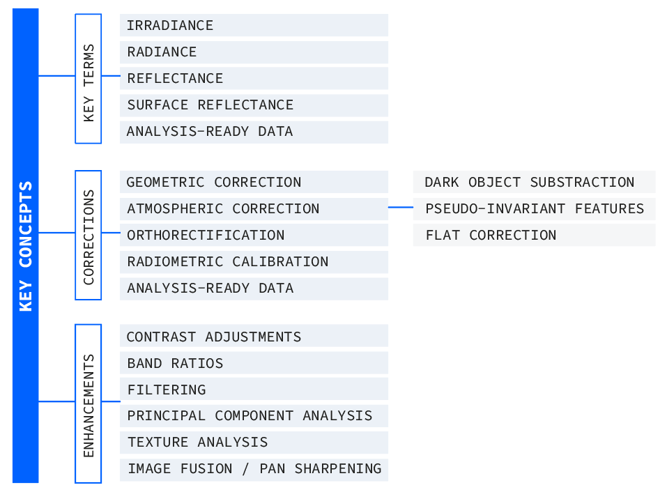
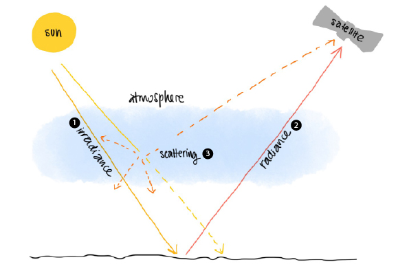
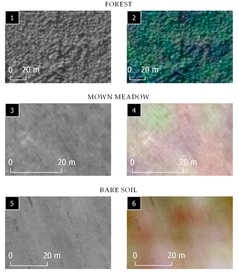
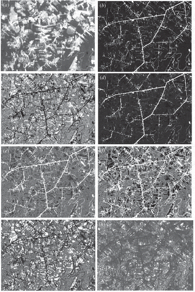

4 Remote Sensing Data
4.1 Summary
This week introduced a lot of new concepts related to corrections, data joining, and enhancements in remote sensing. To keep things clear for future reference, I organized them into categories and decided to do kind of a “dictionary” of these concepts, so it will be useful to understand them when reviewing literature and seeing applications of them.
Image 1. Quick summary of main concepts mentioned in class this week

4.1.1 Key terms
So far many words have been repeated multiple times during lectures and papers I have reviewed and sometimes I still mix them up, so here they are summarised:
| Term | Meaning |
|---|---|
| Irradiance | Radiation reaching Earth from the Sun |
| Radiance | Radiation leaving Earth toward the satellite |
| Reflectance | The proportion of incoming radiation reflected by a surface |
| Surface Reflectance | Reflectance at the bottom of the atmosphere (after atmospheric correction) |
| Analysis-ready data | Preprocessed images, usually in Surface Reflectance format (so we don’t have to do all the corrections ourselves!) |
Image 2. Illustration done to summarise the main terms used in Remote Sensing

4.1.2 Corrections:
This week we saw some of the corrections that raw sensor data could use before we start manipulating it. Most of them are already applied to images we use, as we usually use Analysis-ready data, but I think knowing what kind of preprocessing images have is useful at least as a general knowledge or if we were to work on raw data(maybe needed if I were to work with drone imagery?).
| Term | Meaning |
|---|---|
| Geometric correction | Aligns misaligned images using control points and regression (basically shifting everything so it matches properly). Useful for correcting historical maps to match modern spatial data. |
| Atmospheric correction | Removes distortions caused by atmospheric scattering (because the atmosphere its always there!) |
| Dark Object Subtraction (DOS) | Method for atmospheric correction that finds something that should have zero reflectance and subtracts its measured value from all pixels |
| Pseudo-Invariant Features (PIFs) | Method for atmospheric correction that uses objects with stable reflectance over time as references for correction (great for long-term studies) |
| Flat correction | Method for atmospheric correction that uses field-measured values (without atmospheric interference) as a baseline for regression |
| Orthorectification | Correction that fixes distortions from sensor tilt |
| Radiometric calibration | Converts Digital Number (DN) to spectral radiance to standardize measurements |
4.1.3 Enhancements:
I would say enhancements are a way of transforming images using data that is already available in the image itself, to better show some features. Some of the methods are:
| Term | Meaning |
|---|---|
| Contrast adjustments | Modifies image appearance without changing data values (basically, just making it look better) |
| Band ratios | Dividing one band by another (e.g., NDVI for vegetation analysis) |
| Filtering | Can be low-pass (smoothing) or high-pass (highlighting edges, like for detecting buildings) |
| Principal Component Analysis (PCA) | Reduces dimensionality to capture the most variance (helps focus on key changes in images, but could loose some interpretability) |
| Texture analysis | Measures similarity between a pixel and its neighbors (useful for spotting urban areas or specific land features) |
| Image fusion & pansharpening | Merges data from different sensors, often using high-resolution bands to sharpen lower-resolution images |
4.2 Applications
4.2.1 Multisensor fusion: pansharpening example
This paper by Siok et al.(2020),
Image 3. On the left samples of the best high-spatial-images. On the right, samples of images in natural color composition after being enhanced with the best high-spatial-resolution image

These corrections and enhancements are essential for making sure remote sensing data is accurate and actually useful. For example, atmospheric corrections are super important for environmental monitoring, where we need consistent multi-temporal comparisons. Geometric corrections are crucial for historical imagery alignment, especially in change detection studies. Radiometric calibration ensures that sensor data is comparable across time and space.
Enhancements also have a ton of applications in urban studies, agriculture, and disaster response. Band ratios (like NDVI) help in assessing vegetation health, while texture analysis is great for land-use classification. PCA is often used for detecting land-cover changes, highlighting major differences in multi-temporal images. Image fusion techniques improve spatial resolution, making high-precision mapping and infrastructure monitoring more effective.
One interesting example is multi-sensor fusion, where high-resolution panchromatic images enhance low-resolution multispectral data to improve feature detection. A study titled Multi-Sensor Fusion: A Simulation Approach to Pansharpening Aerial and Satellite Images (MDPI, 2020) discusses different ways to sharpen images and extract better features using fusion techniques.
4.2.2 Textural images for improving land-cover classification in the Brazilian Amazon
This paper by Lu et al. (2014)
Image 4. Illustration done to summarise the main terms used in Remote Sensing

4.3 Reflections
At first, learning about corrections and enhancements felt unnecessary as most modern datasets come preprocessed anyway. But after seeing the applications I think its worth knowing the possibilities we have and what we could do if we ever encounter raw data(maybe not even satellite data). Even if we end up using only Analysis-ready data, I now think it’s important to know what kind of process it has been through so we can assess it better and know what we are working with. Even though I now realise its importance, I found this week to be a bit overwhelming because of all the concepts, but after organizing everything, it started making sense. Some papers are still hard to follow with all their complex formulas, but at least now I have a better foundation to understand what’s going on, so I guess we are having progress!
A couple things caught my attention this week. One thing that surprised me was how much regression is used in remote sensing. I always thought of regression as something for statistical modeling (like in CASA007), but it’s actually everywhere here, aligning images, calibrating radiance, enhancing quality, etc. The other one was seeing Andy’s fieldwork for atmospheric correction which seems pretty cool. It made me think that sometimes we might need higher levels of precision for our images and its interesting to see all the options we have available to handle that.